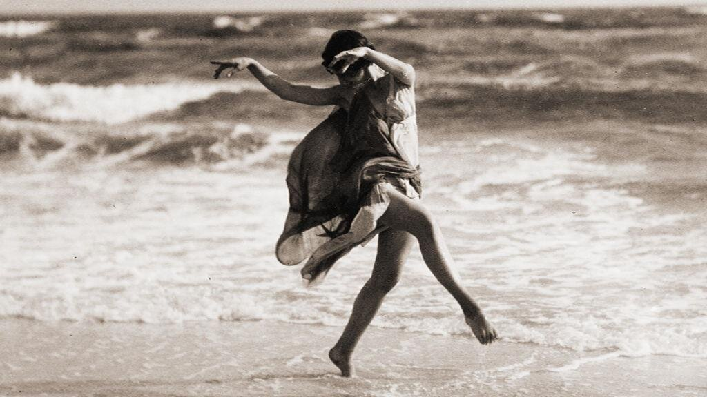
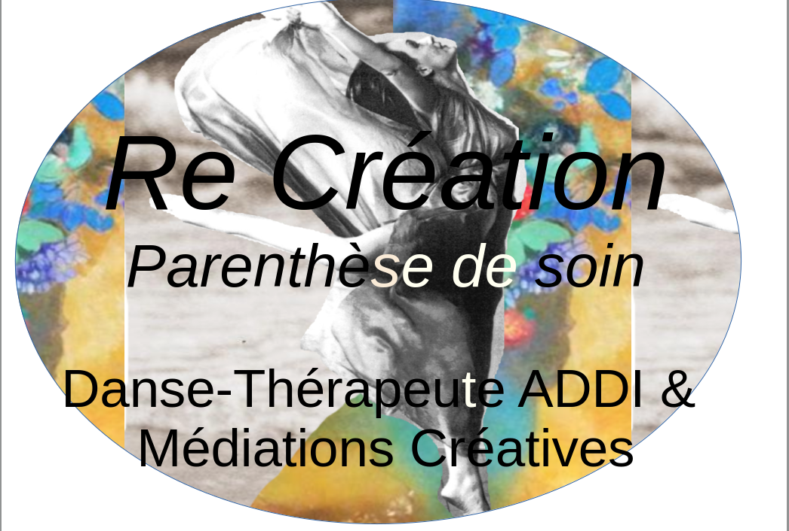
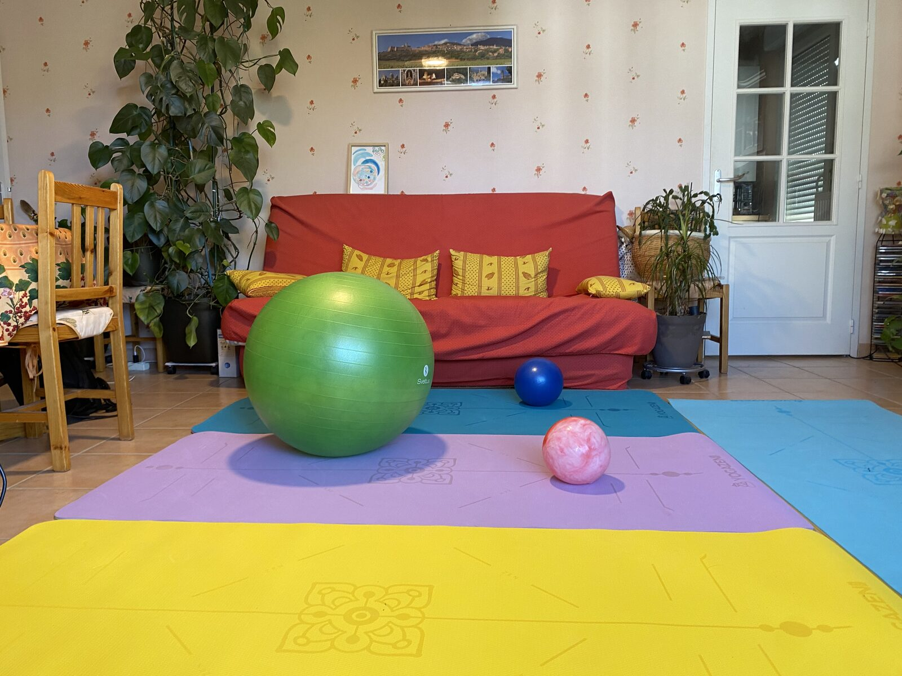
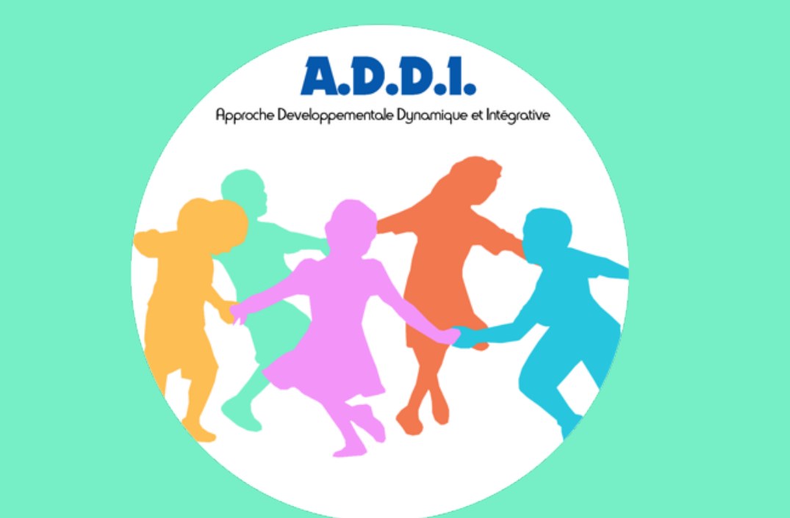
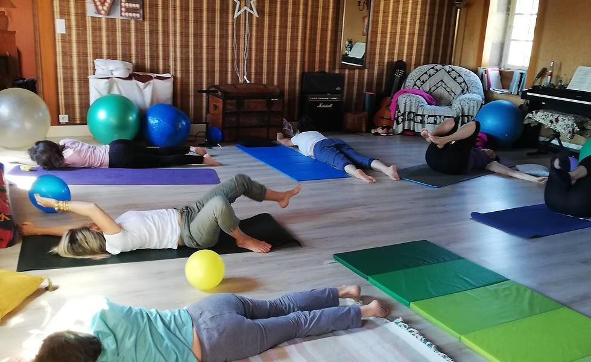
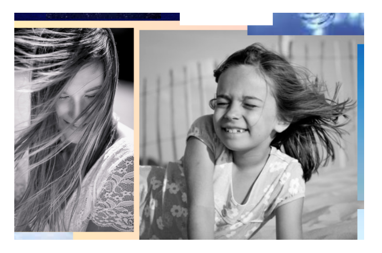
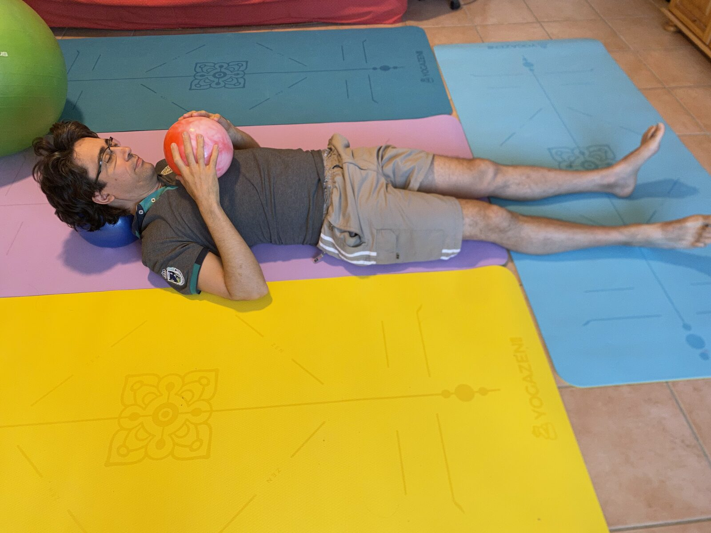
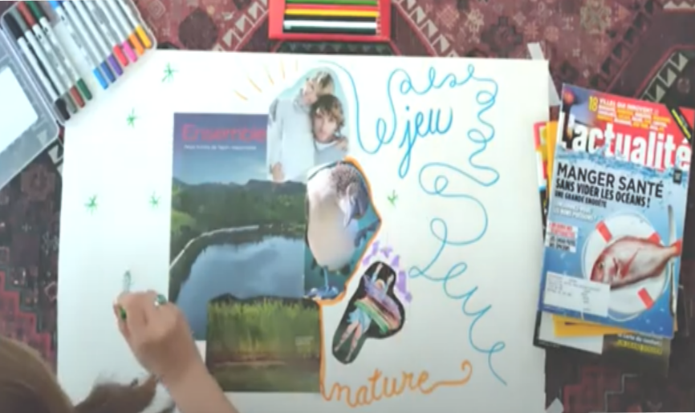
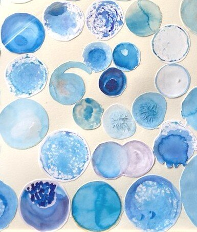
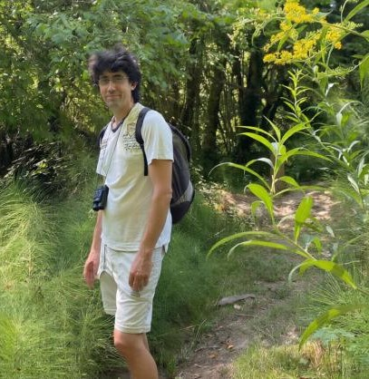

Comment :
Prendre le temps de ralentir et laisser le chemin se faire en soi
Avant l'épuisement total ou après un Burnout, une période de transition de vie complexe, venez prendre le temps de ralentir, de laisser le chemin se faire en soi.
C’est le chemin qui compte :
vous êtes libre pour imaginer, créer, explorer, s'exprimer et danser.
Se déposer : déposer ses histoires et expériences, évacuer ses souffrances, troubles et mal-être, p(a)enser ses blessures, et réguler ses émotions.
Je vous accueille dans un lieu bienveillant, chaleureux, lumineux, naturel et discret, on se sent chez soi, en sécurité, accueilli tel que l’on est, en toute authenticité et en confiance. C’est un cadre de soin où l’on retrouve la joie de vivre dans l’instant présent, un espace de créativité, de recréation de soi, de cœur à cœur.

Adultes en transition de vie, surmenage, ou en quête de mieux-être corporel et émotionnel.
Une plongée dans l’ici et maintenant, basée sur l’écoute du corps et le mouvement authentique.
Séances individuelles adaptées à vos besoins, dans un espace bienveillant et confidentiel.
L’accompagnement et le soin sont personnalisés. Je les adapte à chacun, dans l’instant présent et dans la continuité, en prenant en compte les besoins, les désirs, les ressources, ainsi que les dimensions physiques, émotionnelles et relationnelles. La parenthèse de soin est un lieu de recréation et de liberté, rien n’y est obligatoire, où l’on prend le temps de se retrouver, de créer de l’espace en soi et de renouer avec ses forces profondes.
Je suis aide-soignant à domicile depuis plus de 14 ans. Passionné par les danses folkloriques d’Israël, la danse de louange et la danse naturelle, j’ai développé au fil du temps un profond intérêt pour le lien entre le mouvement, le soin et l’expression de soi.

En 2021, j’ai suivi pendant un an une formation en art-thérapie à Avignon. Désireux de revenir aux origines de la danse-thérapie, j’ai ensuite participé, en tant que soignant, à une formation continue ADDI (Approche Développementale Dynamique et Intégrative) avec Marie-Ange Durwang, aux côtés de psychomotriciens. Cette expérience m’a permis de rencontrer des personnes formidables et de découvrir la richesse d’un travail de groupe fondé sur la bienveillance, la qualité de présence et le soin de soi.

Je poursuis également mon exploration par la participation à plusieurs ateliers de Body-Mind Centering. L’ADDI m’a offert l’occasion d’unifier mes expériences somatiques, artistiques, relationnelles et dansées.
Aujourd’hui, animé par une profonde conscience des fragilités de notre société, j’ai souhaité proposer un accompagnement aux adultes en transition, en surmenage ou en burn-out. Mon intention est d’offrir un espace d’écoute, de présence et de ressourcement, dans un cadre humain, respectueux et bienveillant.
Ce qui me parle profondément dans la démarche de l’ADDI, c’est que le travail de soin s’enracine dans l’observation clinique de l’enfant sain, son mouvement physique au sein de son environnement naturel, pour favoriser son développement. C'est un cadre de référence pour le soin de l'adulte. L’ADDI ce n’est pas une théorie, c’est « une plongée corporelle dans ici et maintenant ». J'ai revisité, observé et intégré sensoriellement mon propre mouvement de développement, toujours en relation. Cette approche m’a permis d'affiner une perception fine de l’autre : dans ses interactions, son identité naissante et son rapport à lui-même.

Au-delà de l’observation, ce chemin m’a profondément touchée. Revisiter mon histoire personnelle à travers mon développement, dans la relation et en moi-même, m’a offert un appui, une sécurité, une ressource intérieure que je ne soupçonnais pas. C’est cette ressource qui est aujourd’hui la matière première de mon accompagnement. Elle est devenue mon principal outil de soin : elle me permet d’accueillir l’autre dans sa vulnérabilité et de l’inviter à renouer avec son propre mouvement de vie.

J’utilise l’expression gestuelle, la danse naturelle et l’art comme outils de rencontre avec soi-même. Chaque séance est un espace de liberté où l’on crée pour se recréer.
Sur ce socle vivant se sont greffés des dispositifs variés que j'ai intériorisés au fil du temps : médiation artistique, écoute musicale, approche corporelle et relationnelle.


Mon approche s'appuie sur la formation ADDI (Approche Développementale Dynamique et Intégrative) transmise par Marie-Ange Durrwang, que je remercie pour la richesse de cet enseignement.
Découvrir le site de l'ADDIPour prendre rendez-vous ou poser une question, n'hésitez pas à m'écrire ou à m'appeler.
📞 07 82 63 70 92
Tarifs : en fonction de vos revenus
